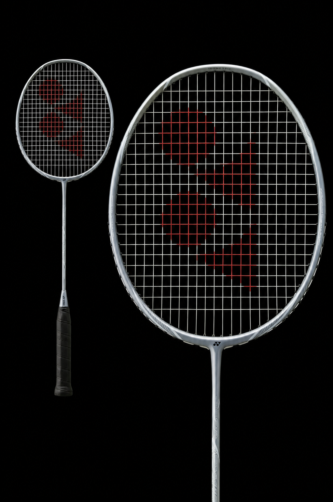

YONEX ASTROX

The Yonex Astrox is a premier, attack-oriented badminton racket series designed for players who want to dominate with steep, explosive smashes and fast-paced rallies. Known for their head-heavy balance and signature technologies, Astrox rackets provide maximum power without sacrificing control.
CORE TECHNOLOGIES:
Rotational Generator System: Precisely distributes weight across the grip end, frame top, and joint for a seamless transition between aggressive shots.
Nanomesh Neo / 2G-Namd: Specialized graphite materials that flex on take-back and snap back rapidly, increasing power and shuttle hold.
Energy Boost Cap Plus: Maximizes shaft performance by allowing it to flex while preventing the shaft from twisting, ensuring stability.